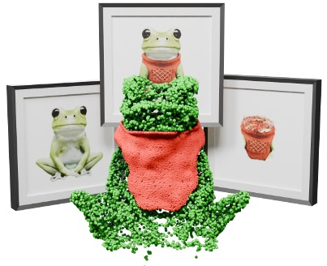
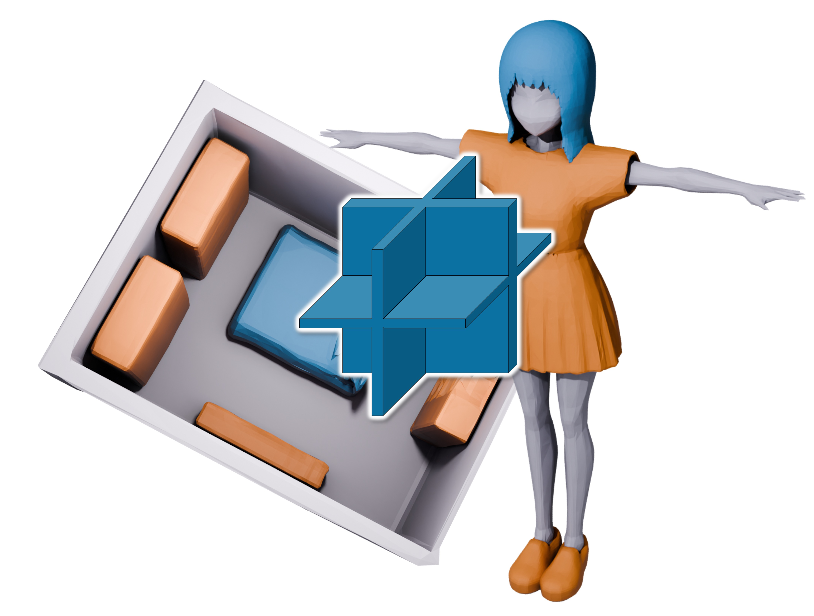
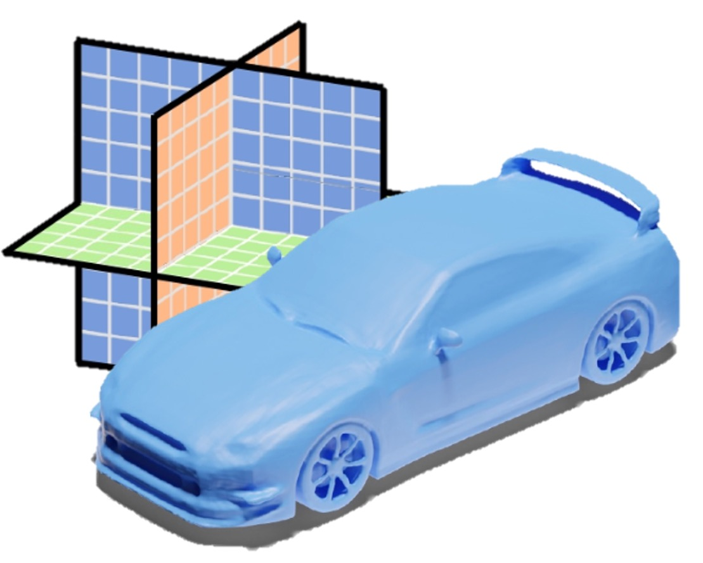
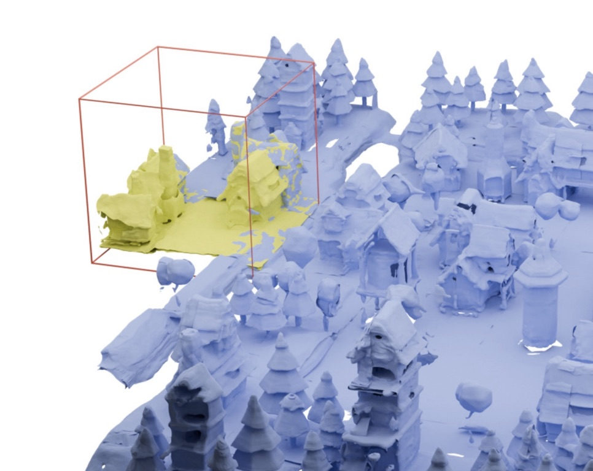
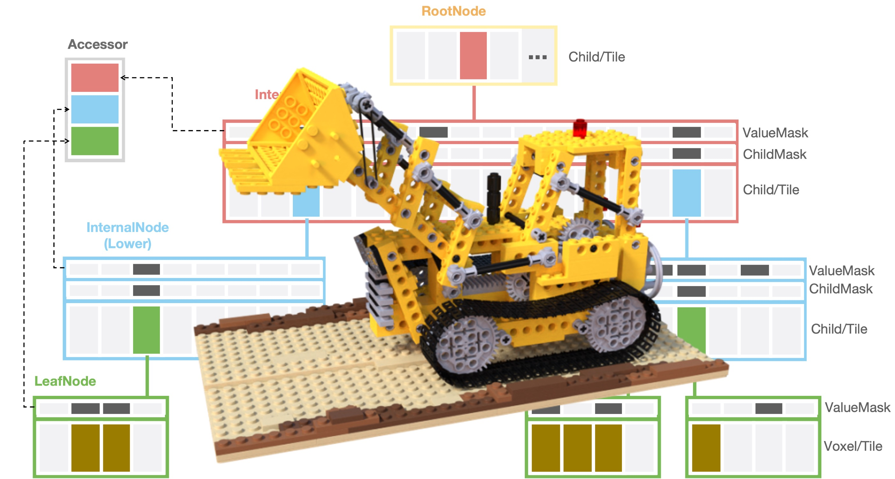

News
News (Jul 2024): One paper is accepted to SIGGRAPH Asia 2024 (Conferences Track).
News (Jul 2024): One paper is accepted to ECCV 2024.
News (Mar 2024): One paper is accepted to ACM Transactions on Graphics (SIGGRAPH) 2024.
News (Feb 2023): One paper is accepted to CVPR 2023.
Your browser does not support the video tag.

PhyCAGE: Physically Plausible Compositional 3D Asset Generation from a Single Image
Han Yan , Mingrui Zhang, Yang Li, Chao Ma, Pan Ji
arXiv , 2024
project page
/
arXiv
/
video
PhyCAGE generates physically plausible compositional 3D assets from a single image.
Your browser does not support the video tag.

Frankenstein: Generating Semantic-Compositional 3D Scenes in One Tri-Plane
Han Yan , Yang Li, Zhennan Wu, Shenzhou Chen,
Weixuan Sun, Taizhang Shang, Weizhe Liu, Tian Chen, Xiaqiang Dai,
Chao Ma, Hongdong Li, Pan Ji
SIGGRAPH Asia , 2024
project page
/
arXiv
/
video
/
code
Frankenstein generates semantic-compositional 3D scenes in a single forward pass.
Your browser does not support the video tag.

NeuSDFusion: A Spatial-Aware Generative Model for 3D Shape Completion, Reconstruction, and Generation
Han Yan ,
Zhennan Wu, Shenzhou Chen, Hongdong Li, Pan Ji
ECCV , 2024
project page
/
arXiv
NeuSDFusion is a novel spatial-aware 3D shape generation framework.
Your browser does not support the video tag.

Blockfusion: Expandable 3D Scene Generation using Latent Tri-plane Extrapolation
Han Yan , Taizhang Shang,
Weixuan Sun, Senbo Wang, Ruikai Cui, Weizhe Liu,
Hiroyuki Sato, Hongdong Li, and Pan Ji
ACM Transaction on Graphics (SIGGRAPH) , 2024
project page
/
arXiv
/
video
/
code
Blockfusion directly generate large unbounded 3D scene .
Your browser does not support the video tag.

PlenVDB: Memory Efficient VDB-Based Radiance Fields for Fast Training and Rendering
Han Yan , Celong Liu, Chao Ma, Xing Mei
CVPR , 2023
project page
/
pdf
/
video
/
code
PlenVDB directly learns the VDB data to achieve NeRF acceleration .
Services
Reviewer: CVPR, AAAI, TGRS
{kind=link}